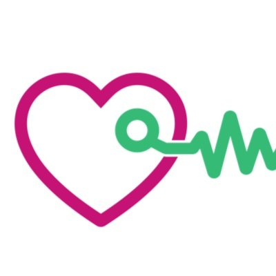

Aditya Kaushik
Surikuchi
PhD Candidate
University of Amsterdam
Netherlands


Work Experience

TIMELY EU project
08/2021 – 08/2023
Machine Learning Engineer
Worked on designing explainable AI models leveraging real-time clinical data.
Aalto CBIR group
04/2018 – 08/2019
Research Assistant
Worked on vision-based language generation as part of the MeMAD (EU Horizon 2020) project.

CommerceIQ
06/2015 – 06/2017
Software Development Engineer
Worked on the design and development of the dynamic price-intelligence module.
Innova Solutions
06/2014 – 06/2015
Associate Software Engineer
Worked on cross-platform web and mobile applications.
Aditya Kaushik
Surikuchi
PhD Candidate
University of Amsterdam
Netherlands